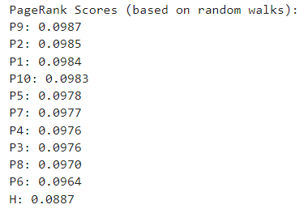
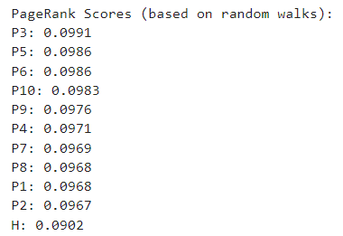
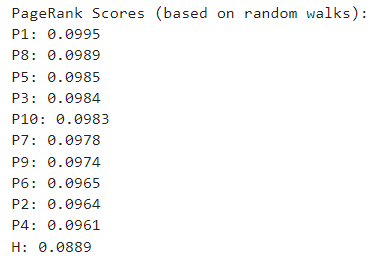
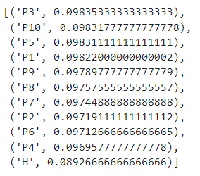

Runtime Analysis
We conducted two main queries:
For the first query - the runtime was approximately 1.5 minutes.
For the second query - the runtime for a single execution ranged from 1.5 to 2
minutes.
The primary factor affecting the runtime was bypassing LinkedIn’s bot detection and the time
required to send various requests.
The processing time was negligible, taking only a fraction of a second to
extract text, process
it,
save it in a DataFrame, and export it to a CSV file;
with a fast internet connection and proximity to LinkedIn’s servers, the runtime could potentially
be reduced to less than a minute.
PageRank Calculation with Random Walks
Given our system's structure with one hub and several authorities (with no connections between
authorities),
we used a variation of the PageRank formula incorporating random walks. Each authority page had a 10%
chance
to link to a different page. Here are the results from three runs:
Run 1:

Run 2:

Run 3:

We observed that the hub page consistently had the lowest PageRank, which is logical given that no pages
had
explicit links pointing to the hub page. Additionally, the order of the authority pages varied due to
the
randomness in the 10% chance of linking out to other nodes. The final ranking was calculated by
averaging
the rankings from all three runs:

User Feedback and Query Optimization
We asked three users to rank our PageRank results and provide feedback to perform query optimization.
Here
are their rankings and relevant keywords:
Relevant Keywords
Unique keywords (for each job listing):
| Job Listing |
Unique Keywords |
| P1 |
Deep learning |
| P2 |
retention, predictive models, data visualization, Hadoop, Spark, SaaS, NLP, sci-kit learn |
| P3 |
Forecasting, SQL, gradient boosting, MLOPs, reinforcement, Apache Airflow |
| P4 |
Biomedical, deep learning |
| P5 |
Research, publishing, paper, feature engineering, media |
| P6 |
Formatting |
| P7 |
Research, publishing, paper, feature engineering, media |
| P8 |
ML, generative, AWS, GCP, RAG |
| P9 |
pipelines, distributed programming, AWS |
| P10 |
AWS, Big Data, CNN, RNN, LSTM, Transformer, sci-kit learn, Multimodal, transfer |
User 1’s Ranking:
| Rank |
Page |
| 1 |
P3 |
| 2 |
P8 |
| 3 |
P9 |
| 4 |
P10 |
| 5 |
P2 |
| 6 |
P4 |
| 7 |
P6 |
| 8 |
P1 |
| 9 |
P7 |
| 10 |
P5 |
Relevant keywords: Forecasting, SQL, gradient boosting, MLOPs, reinforcement, Apache
Airflow, ML,
generative,
AWS, GCP, RAG, pipelines, distributed programming, Big Data, CNN, RNN, LSTM, Transformer, sci-kit learn,
Multimodal, transfer, retention, predictive models, data visualization, Hadoop, Spark, SaaS, NLP.
Non-Relevant keywords: Research, publishing, paper, feature engineering, media,
formatting, biomedical.
User 2’s Ranking:
| Rank |
Page |
| 1 |
P6 |
| 2 |
P7 |
| 3 |
P5 |
| 4 |
P1 |
| 5 |
P3 |
| 6 |
P10 |
| 7 |
P8 |
| 8 |
P9 |
| 9 |
P2 |
| 10 |
P4 |
Relevant keywords: Formatting, research, publishing, paper, feature engineering, media,
Deep learning,
Forecasting, SQL, gradient boosting, MLOPs, reinforcement, Apache Airflow.
Non-Relevant keywords: ML, generative, AWS, GCP, RAG, pipelines, distributed
programming, AWS, Big Data,
CNN,
RNN, LSTM, Transformer, sci-kit learn, Multimodal, transfer, retention, predictive models, data
visualization, Hadoop, Spark, SaaS, NLP, Biomedical, deep learning.
User 3’s Ranking:
| Rank |
Page |
| 1 |
P1 |
| 2 |
P9 |
| 3 |
P4 |
| 4 |
P8 |
| 5 |
P5 |
| 6 |
P7 |
| 7 |
P3 |
| 8 |
P6 |
| 9 |
P10 |
| 10 |
P2 |
Relevant keywords: Deep learning, pipelines, distributed programming, AWS, Biomedical,
deep learning, ML,
generative, GCP, RAG, Research, publishing, paper, feature engineering, media.
Non-Relevant keywords: Research, publishing, paper, feature engineering, media,
Forecasting, SQL,
gradient
boosting, MLOPs, reinforcement, Apache Airflow, Formatting, AWS, Big Data, CNN, RNN, LSTM, Transformer,
sci-kit learn, Multimodal, transfer, retention, predictive models, data visualization, Hadoop, Spark,
SaaS,
NLP.
Query Optimization
Based on user feedback, we proposed the following keywords for query optimization:
User 1: MLOPs, generative, Big Data, data visualization, SaaS, NLP.
User 2: Research, feature engineering, SQL, Media, Forecasting.
User 3: Biomedical, deep learning, pipelines.